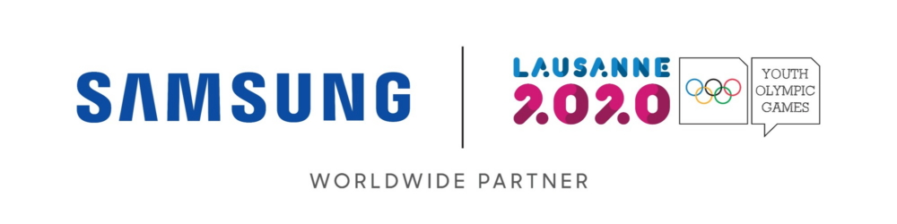

| Home | Sumsung Accessories | |
News & Reviews | Help |
Samsung Continues its Commitment to the Olympic Movement and Young Athletes at Lausanne 2020
|
|---|
Samsung invites athletes and visitors to be part of the Youth Olympic Games through the cutting-edge mobile technology experiences at its Olympic Games Showcase and the inspirational ‘Chat with Champions’ session |
|  Samsung Electronics, Worldwide Olympic Partner in the Wireless Communications Equipment and Computing Equipment category, is bringing cutting-edge mobile technology and Olympic inspiration to the Winter Youth Olympic Games Lausanne 2020. In addition to its Olympic Showcase, Samsung is connecting the future generation of Olympic athletes with current Olympian Dina Asher-Smith to defy barriers to achieve meaningful progress and push beyond all limits with an inspirational panel session.
|
 |
| 5G Galaxy Smartphones: Samsung’s Olympic Games Showcase invites visitors to experience the most recent editions of Samsung’s 5G smartphones, including the Galaxy S10, Galaxy Note10, Galaxy Fold and Galaxy A90.
Creative Experiences: Visitors will be also able to interact with the creative capabilities of Samsung mobile technology, such as Galaxy smartphone cameras, S Pen and VR.
Olympic Games Pins: Visitors will have the opportunity to receive special Samsung Olympic Games pins that embody the value of the Youth Olympic Games.
To further empower connection and inspire the next generation of Olympic athletes, Samsung will also host a special panel discussion as a part of the ’Chat with Champions’ series, co-hosted with the International Olympic Committee. Athletes competing in the Youth Olympic Games are invited to learn more on building their personal brand, and to hear inspirational stories that will keep them motivated as their careers develop – on and off the field of play. Panelists will include:
|
 Fans and volunteers experience the Galaxy Fold, Note10+ 5G, and A90 5G smartphone devices at the Samsung Olympic Showcase in Yodli Park during the Youth Olympic Winter Games Lausanne 2020.
Fans and volunteers experience the Galaxy Fold, Note10+ 5G, and A90 5G smartphone devices at the Samsung Olympic Showcase in Yodli Park during the Youth Olympic Winter Games Lausanne 2020.
|